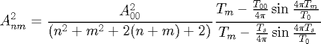
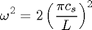
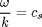

Contents
Determination of Driver Wave Amplitudes for Hydrodynamical Simulations of Pmodes in the Solar Atmosphere
The amplitude for the n m mode is given by.

http://solarwavetheory.blogspot.co.uk/search/label/solar%20global%20oscillations
The series for the normal modes are calculated from the following expressions for a given of the speed of sound c and a value for the length of the simulation box of 4Mm. The frequency is computed using

For the normal modes the wave numbers and frequencies satisfy the following relationship

Resonant mode for 4Mmx4Mm box n=m and n=1,2,3
% % <html> % <br /> % <br /> % <table border="1" style="width: 100%;"> % <tbody> % <tr> % <td>Mode</td> % <td>Driver Period (s)</td> % <td>Amplitude (m/s)</td> % <td>Label</td> % </tr> % <tr> % <td>(1,1)</td> % <td>471.4</td> % <td>171.5</td> % <td>spic4p71a_1_1_3d</td> % </tr> % <tr> % <td>(2,2)</td> % <td>235.7</td> % <td>114.3</td> % <td>spic2p36_2_2_3d</td> % </tr> % <tr> % <td>(3,3)</td> % <td>157.1</td> % <td>85.8</td> % <td>spic1p57a_3_3_3d</td> % </tr> % </tbody></table> % <br /> % %for 30, 180,300s drivers% %30s driver sound speed 188.6km/s % <br /> % <br /> % <table border="1" style="width: 100%;"> % <tbody> % <tr> % <td>Mode</td> % <td>Driver Period (s)</td> % <td>Amplitude (m/s)</td> % <td>Label</td> % </tr> % <tr> % <td>(0,0)</td> % <td>30.0</td> % <td>343.4</td> % <td>spicule4b0_3d</td> % </tr> % <tr> % <td>(0,1)</td> % <td>30.0</td> % <td>217.2</td> % <td>spic4b0_1_3d</td> % </tr> % <tr> % <td>(0,2)</td> % <td>30.0</td> % <td>153.6</td> % <td>spic4b0_2_3d</td> % </tr> % <tr> % <td>(0,3)</td> % <td>30.0</td> % <td>117.8</td> % <td>spic4b0_3_3d</td> % </tr> % </tbody></table> % <br /> % <br /> %180s driver sound speed 31.4km/s % <br /> % <br /> % <table border="1" style="width: 100%;"> % <tbody> % <tr> % <td>Mode</td> % <td>Driver Period (s)</td> % <td>Amplitude (m/s)</td> % <td>Label</td> % </tr> % <tr> % <td>(0,0)</td> % <td>180.0</td> % <td>348.3</td> % <td>spic6b0_3d</td> % </tr> % <tr> % <td>(0,1)</td> % <td>180.0</td> % <td>220.3</td> % <td>spic6b0_1_3d</td> % </tr> % <tr> % <td>(0,2)</td> % <td>180.0</td> % <td>155.8</td> % <td>spic6b0_2_3d</td> % </tr> % <tr> % <td>(0,3)</td> % <td>180.0</td> % <td>119.5</td> % <td>spic6b0_3_3d</td> % </tr> % </tbody></table> % <br /> % <br /> %300s driver sound speed 18.9km/s % <br /> % <br /> % <table border="1" style="width: 100%;"> % <tbody> % <tr> % <td>Mode</td> % <td>Driver Period (s)</td> % <td>Amplitude (m/s)</td> % <td>Label</td> % </tr> % <tr> % <td>(0,0)</td> % <td>300.0</td> % <td>350</td> % <td>spic5b0_3d</td> % </tr> % <tr> % <td>(0,1)</td> % <td>300.0</td> % <td>221.4</td> % <td>spic5b0_1_3d</td> % </tr> % <tr> % <td>(0,2)</td> % <td>300.0</td> % <td>156.5</td> % <td>spic5b0_2_3d</td> % </tr> % <tr> % <td>(0,3)</td> % <td>300.0</td> % <td>120.0</td> % <td>spic5b0_3_3d</td> % </tr> % </tbody></table> % <br /> % <br />
Table of amplitudes for normal mode
Sound speed is 20km/s
| Mode | Driver Period (s) | Amplitude (m/s) | Label |
| (0,0) | 282.84 | 350.3 | spic2p82a_0_0_3d |
| (0,1) | 200.00 | 213.5 | spic2p00a_0_1_3d |
| (0,2) | 133.33 | 154.1 | spic1p33a_0_2_3d |
| (0,3) | 100.00 | 118.1 | spic1p00a_0_3_3d |
% </html> %below need correcting
%% Table of amplitudes for normal mode
Sound speed is 31.43km/s%below need correcting
| Mode | Driver Period (s) | Amplitude (m/s) | Label |
| (0,0) | 179.98 | 348.2 | spic2p82a_0_0_3d |
| (0,1) | 127.27 | 345 | spic2p00a_0_1_3d |
| (0,2) | 84.84 | 344.6 | spic1p33a_0_2_3d |
| (0,3) | 63.63 | 341.3 | spic1p00a_0_3_3d |
function amplitude=pamplitude(n,m,t00,tnm,a00,tm)
amplitude2=((a00.^2)./(n.^2+m.^2+2.*(n+m)+2)) ;
t1=tm-(t00/(4*pi)).*sin(4*pi*tm/t00);
t2=tm-(tnm/(4*pi)).*sin(4*pi*tm/tnm);
amplitude=sqrt(2*amplitude2*t1/t2);
Error using pamplitude (line 297) Not enough input arguments.